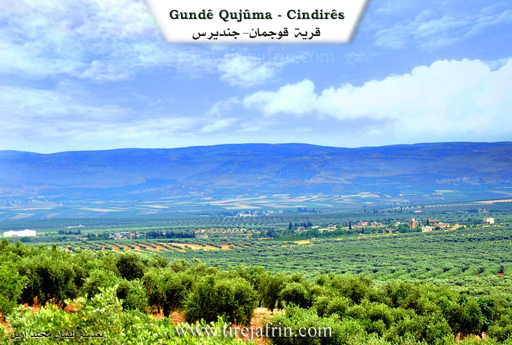
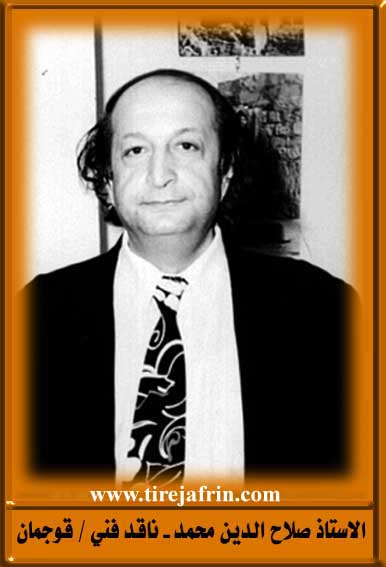
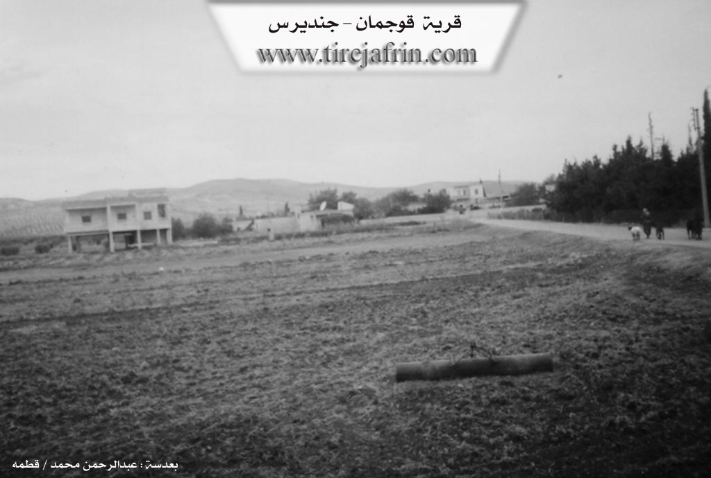

General Information
Nahiya (Subdistrict)
Cindires
Also Known As
Qijuma, Qijûma, Qojoman, Qoşîma, Qujman, Qujûma, الضخم, قوجمان, قوجه مانلي, قجيمو
Tribes
Mellî
Families, Clans, etc.
Elî Jiko, Elûş, Hemê Şêx, Mihemed Hesen, Ogula, Osê, Sîwaro

Photos



Basic Information about Qujûma
Source: Ax û Welat
Etymology: Derived from a Turkish title meaning great or valuable person, interpreted locally as Însanê Mezin
Foundation Date/Period: 400 to 500 years ago
Hills: Çiyayê Lêlûn
Shrines: Ziyaretgeha Ebdirehman
Other Landmarks: Deşta Cûmê, Geliyê Komroviyê, Geliyê Xerîcê, Geliyê Tobaqa, Deşta Bêrganiyê
Summaries
I. Summary from TirejAfrin Site (English) of Qujûma
According to the book 'جبل الكرد' 'Mountain of the Kurds' (عفرين) Geographic Study by Dr. Mohammed Abdo Ali:
Qujûma, قوجه مانلي, الضخم /1208n - 1286he - 7km - 300m/:
- The folk name indicates something inflated, and it is also a name for a Kurdish tribe mentioned by /ليرخ - p. 19/, living around قارص (Qars) city in northern كردستان (Kurdistan). The Arabs have translated its ancient name and called it "الضخم" (Al-Dakhm).
According to the book: عفرين .... Her River and Green Hills by writer عبدالرحمن محمد from قطمه (Qatma) village
قوجمان: A village in جبل الكرد (Jabal al-Kurd) that follows جندريس (1 - PhD/Villages/Cindirês) district, عفرين (Afrin) region, حلب (Aleppo) governorate.
It is a medium-sized village located at the northeastern edge of جندريس (1 - PhD/Villages/Cindirês) plain, crossed by a stream flowing south to feed عفرين (Afrin) river. Its lands have fertile loamy soil rich in groundwater, 7km from جندريس (1 - PhD/Villages/Cindirês) town to the northeast. It is bounded to the north by a fertile agricultural plain and mountainous highlands and اشكان شرقي (Ishkan Sharqi) village and خرزان (Kharzan) village, to the south by an agricultural plain planted with olive trees and قوربه (1 - PhD/Villages/Qurbê) village, to the west by a fertile agricultural plain planted with olive trees and برج كموش (Burj Kamush) and قيلة (Qila) villages, and to the east by a fertile agricultural plain planted with olive trees and الشيخ عبد الرحمن (Sheikh Abd al-Rahman) village.
It has about 65 houses and is about 250 years old. Its old houses are stone and clay with flat wooden roofs, overwhelmed by modern concrete houses that spread east and west. There are several modern villas in the village center, the most important being the villa of Mr. بهجت سيدو ميمي (Bahjat Sido Mimi) who are the original owners of the village and the first to inhabit it. It has electricity network, primary school and a modern mosque. The village drinks from artesian wells adjacent to the houses. Most of its residents work in olive and grain cultivation both rain-fed and irrigated from artesian wells in addition to summer vegetables, walnuts and apricots, alongside raising sheep and goats. It connects with the district center and neighboring villages by a paved road that passes through its center to خرزان (Kharzan).
Village mayor: حسن فهمي حسين (Hassan Fahmi Hussein)
Prepared and implemented by: Tirej Afrin website director: عبدالرحمن حاجي عثمان (Abdulrahman Haji Othman)
20/12/2013
II. Summary of Qujûma from Ax û Welat
Source: https://www.youtube.com/watch?v=p-LHjHSNIBs
The village of Qûjûma, also referred to as Xwejima by some residents, is situated in the Cindirês district of the Efrîn region. Located at the foothills of Çiyayê Lêlûn within the fertile Deşta Cûmê, the village lies approximately 17 kilometers east of Cindirês and 20 kilometers west of Efrîn. The settlement was established between 400 and 500 years ago by migrants who descended from Xarza to the plain in search of better grazing lands for their livestock. The first settler was Mihemed Hesen from the Mellî tribe. Historically, the residents initially lived in caves found in the area before constructing homes from mud and reeds, and eventually transitioning to modern stone structures.
The social structure of Qûjûma is predominantly defined by the Mellî tribe. Key families residing in the village include Elî Jiko, Sîwaro, Osê, Elûş, Ogula, and Hemê Şêx. While the majority of the village follows the Sunni Muslim faith, the Hemê Şêx family is identified as Êzîdî. The village has a strong reputation for education and culture. It was home to Xelîl Edîb, also known as Xelîl Efendî, an early intellectual who established a school there in 1937. Another prominent figure was Selahedîn Mihemed, a critic, writer, and architect who worked in Şam and authored books on culture and art, including works on the artist Luay Kayyali. The village also produced artists like Cemê, a singer in Koma Armanc, and Adnan Beyan.
The local economy is driven by olive cultivation, with the region boasting millions of trees. Qûjûma hosts small industries, including the Sezer charcoal and soap workshops, which export products as far as Erbîl. Geographically, the village is surrounded by natural landmarks such as Geliyê Komroviyê, Geliyê Xerîcê, Geliyê Tobaqa, and the plain of Deşta Bêrganiyê. To the east lies the sacred site Ziyaretgeha Ebdirehman. A unique contemporary feature of the village is the hand dug cave of Apê Xelîl, a resident who spent twenty years carving a living space into the rock to live a solitary life connected to nature. The village currently contains over 100 households, with public institutions named after local martyrs such as the Şehîd Biharîn school and the Şehîd Hesen commune.
II. Ax û Walat Book 2
26
Qujîma
4.4.2017
[Image of the village of Qujîma]
The village of Qujîma was built in the depths of the Cûmê plain, affiliated with the Cindirêsê district of the Efrîn canton, located 7 km east of the city of Cindirêsê and 20 km west of the city of Efrîn.
The name of the village comes from a Turkish word, which means (Valuable thing).
The village was built on the site of an ancient area, and the abundance of caves is a witness to this fact.
Mihemed Hesen was the first person to settle in the village, and he was from the Milî tribe; he came with his family from the Xerzan region and
27
settled here. To this day, his relatives are in the Xerzan mountain region across the border.
All the people of the village are Muslim; there is only one Yazidi family.
There are 17 families in the village:
The families of Mihemedê Hesen, Bekrê Nesê, Mirûdê Mistefê, Îbiş, Osman Axa—most of these families are one—the families of Osikê, Heyder, Hebîb, Tirko, Osmanê Uglo, Ebdê Elkê, Ûsib, Hisênê Xecê, Koçer, Elî Soz, Fatwerdê, and the family of Şêx Ebdelah, who is originally Arab from the Cêsî tribe.
More than 100 houses and nearly 1000 people live in the village.
To the north of the village are the water canal, the village of Aşka, and the Bîrgeniyê plain; to the east, the Kumroviyê valley, the shrine of Ebdilrehman, and the village of Kanî Gewrikê; to the south, the Xerîcê valley, the village of Qurbê, and the main road of Efrîn-Cindirêsê; and to the west, the Teboka valley and the villages of Bircikê and Qîlê.
The people of the village make their living from agriculture, and the area is famous for agriculture because the village is in the depths of the Çûmê plain and it possesses a distinct wealth; there are many grains and olive groves there.
Some families raise livestock. In the village, there is a soap factory and a charcoal factory. Nearly 20 people work in them.
Nearly 8 people work in various factories in Cindirêsê.
28
Around 15 people work in the institutions and bodies of the Autonomous Administration in Cindirêsê.
There is one martyr from the village named martyr Biharîn.
The village's school is named after Martyr Biharîn, and the village's commune is named after Martyr Hesen.
Xelîl Edîb, who was known by the name (Xelîl Efendî), was the first intellectual in the Efrîn region to receive a preparatory certificate in 1937 and worked as a teacher in many places in Efrîn. He was one of the founders of the Kurdish Association in Syria.
The agricultural engineer Ebdilrehman was the deputy head of the Agriculture Board of the Efrîn canton, and he continued in his work for 3 years.
The two artists Serbest and Ednan Biyan have sung many famous songs, including the song ((I am a stranger in my homeland)).
The artist Selahedîn Mihemed was a high-ranking employee in the Ministry of Culture of the Syrian state. He was also a world-renowned painter and critic. He wrote many books on cultural topics.
[Image of Selahedîn Mihemed]
www.tirejafrin.com
The late artist Salah Muhammad in Qamishli
The literacy rate in the village is high, including 16 doctors and pharmacists, and many other people who
29
have obtained university degrees in various fields.
It is worth remembering that the village's school was established by the UNESCO organization in 1985.
Transcriptions and Subtitles
| Source | Video | Subtitles | Transcript |
|---|---|---|---|
| Ax û Welat 1 | Watch Video | Download SRT | View Transcript |
Foundation/Origin Information of Qujûma
The Bahjat Sido Mimi family are the original owners of the village and the first to inhabit it.
Source: TirejAfrin Site
Its founding families, belonging to the Millî tribe from Northern Kurdistan, relocated from the village of Xerzûn.
Source: Ax û Walat Transcript
Possible Village Name Meaning of Qujûma
The folk name indicates something inflated. It is also a name for a Kurdish tribe living around Qars city in northern Kurdistan. The Arabs translated its ancient name to 'Al-Dakhm' (The Huge).
Source: TirejAfrin Site
The name Qojoman, meaning 'great man' in Turkish, was reportedly given during the Ottoman period.
Source: Ax û Walat Transcript
V. Links
- Tirejafrin:
http://www.tirejafrin.com/site/kura%20afrin%20Cindires%20-%20qujman.htm - Ax û Welat:
https://www.youtube.com/watch?v=p-LHjHSNIBs - Jawlat:
https://www.youtube.com/watch?v=lP6NQ-ACWYw - Video:
https://www.youtube.com/watch?v=tvyudwN4d5k
https://www.youtube.com/watch?v=9PauoSZKds0
https://www.youtube.com/watch?v=FlQ6XIQXzZg
https://www.youtube.com/watch?v=DmjWh67ytVI
https://www.youtube.com/watch?v=p-LHjHSNIBs